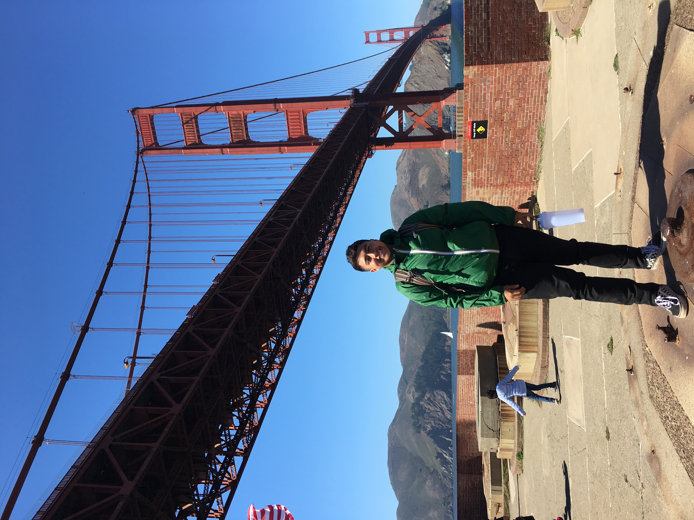

Hello, my name is Orlando and I am 21 years old. Some of my interests are reading books, playing video
games, and traveling to name a few.
In regards to my education, I decided to take the community college approach to save some money and get
my
gen-eds out of the way. I've earned a spot on the dean's list for my academic performance as well as
recognigtion from the NHS Phi Thetta Kappa. I intend to enroll in a 4yr institution after my certificate
completion and major either in Economics or Computer Science.
As far as the career side of things for me, I currently hold a research internship at one of Chicago's
oldest investment firms in the research department. Aside from that, I hope to get the experience needed
from this bootcamp to get an internship at a start-up by next summer. This will be very benificial to me
because this will bridge the gap beween my and a fortune 500 company which is my ultimate goal. Working
for
a start-up will show I know/worked in all aspects of the business on top of build up my resume. My
ultimate
goal is, like I said, to work for a fortune 500 company and work my way up towards a consultant role.